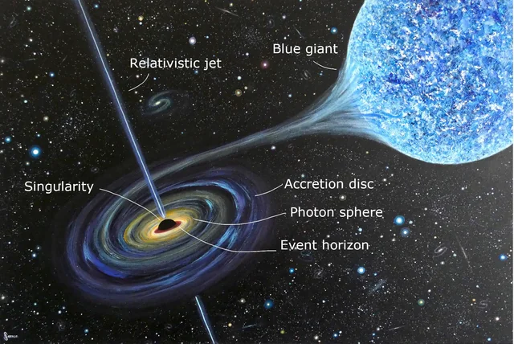

Blackholes are very interesting yet cool things to see. Blackholes are something that come out of the process called, "stellar collapse". This happens when a star is at the end of its life and shoots the shells of the star off and leaves the very dense core left. This core has a massive gravitational pull which sucks things in. Blackholes grow and grow the more they eat and they don't stop.
Going further inside the blackhole you will start to reach the Event Horizon which shows no return anymore. After reaching the Event Horizon you reach the "point of no return" where light can't even escape the blackhole hole. Anything inside of the blackhole keeps going farther and farther away, getting closer to the Singularity.
The Singularity of the blackhole is essentially the core of the blackhole, where everything inside goes and then gets broken down. Anything getting broken down passes what we know of the laws of physics. The singularity is infinitely dense and infinitely small which prevents anything from leaving. There are also 2 types of singularities. In a non-roatating blackhole the singularity is a point singularity and when the blackhole is rotating the singularity is a ring singularity.
The process of being sucked into a blackhole starts with you getting pulled closer and closer to it until you start the spaghettification step. This step consists of it looking like you are being stretched into a spaghetti strand as time looks like its slowing down but is still moving at the same pace. At this point you wouldn't be able to return because you will have hit the Event Horizon and will continue to be pulled in until you reach the core and be crushed.
